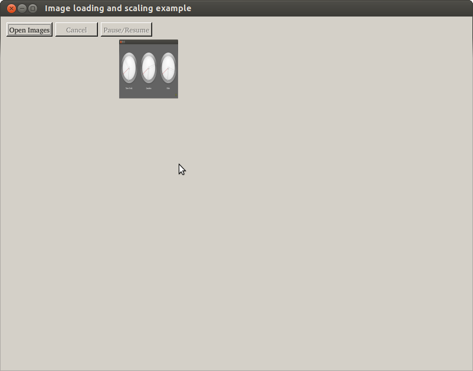
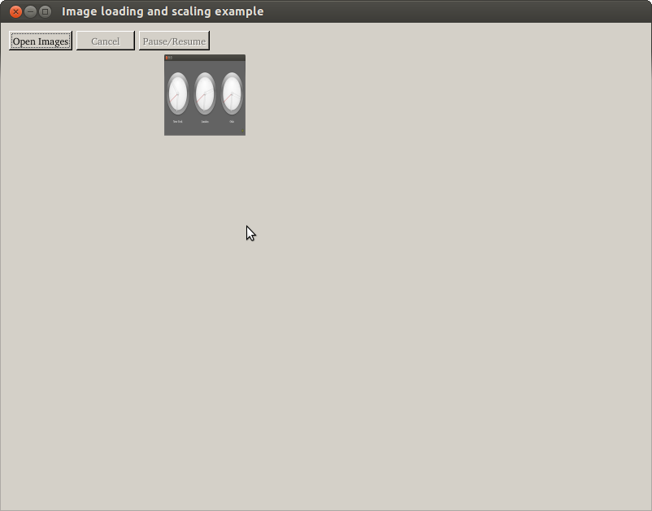

Image Scaling Example
Demonstrates how to asynchronously scale images.

The QtConcurrent Map example shows how to use the asynchronous QtConcurrent API to load and scale a collection of images.
Files:
Demonstrates how to asynchronously scale images.

The QtConcurrent Map example shows how to use the asynchronous QtConcurrent API to load and scale a collection of images.
Files: